iPhone, iPad & Mac
Give your photos the presentation they deserve.
Create frames and layouts for your photos. Add your details, save your style, and use it again without rebuilding it every time.
Join the public beta through Apple’s TestFlight app. How to install →
Available for iPhone, iPad, and Mac.


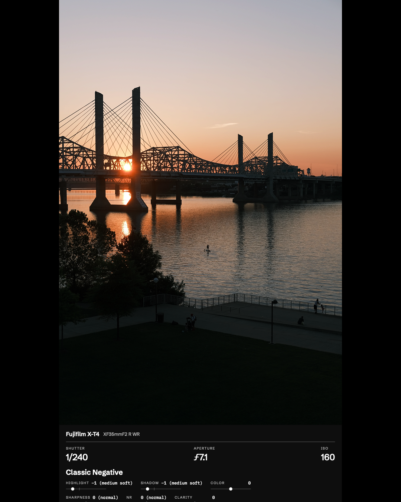
Compositions made in Decks.
Layouts you can save and reuse
Stop rebuilding the same layout.
You know how you want your photos to look. Getting there can mean working around limited tools, painstakingly arranging everything in Photoshop, and repeating the same steps for your next set of photos.
Choose a layout and your photos.
Start on Home with a layout, a smart layout, or a camera details design, then pick one photograph or a whole set.
Make it yours.
Review every page on one screen, then add framing, text, camera details, and a date stamp in the editor.
Save a reusable template.
Export your work and keep the design as a template for your next set.
Saved templates
Reuse a template with new photos.
These three exports use the same saved template. The layout and frame are already there for the next photograph.


Export destinations
Wherever your photos go.
Choose the size and layout for a post, story, carousel, or digital frame, then export your files. Working with video? Frame your clips, too → Want the date on the photo? Add a date stamp →


Captions and reuse
Reuse saved caption presets with Snippets, and track copied captions in the Caption Sheet.


Preparing photos for Aura
Choose your frame, let Smart Layout arrange a mixed batch, then swap photos to choose the pairs. Export the finished images and upload them through the Aura app. See the setup guide →

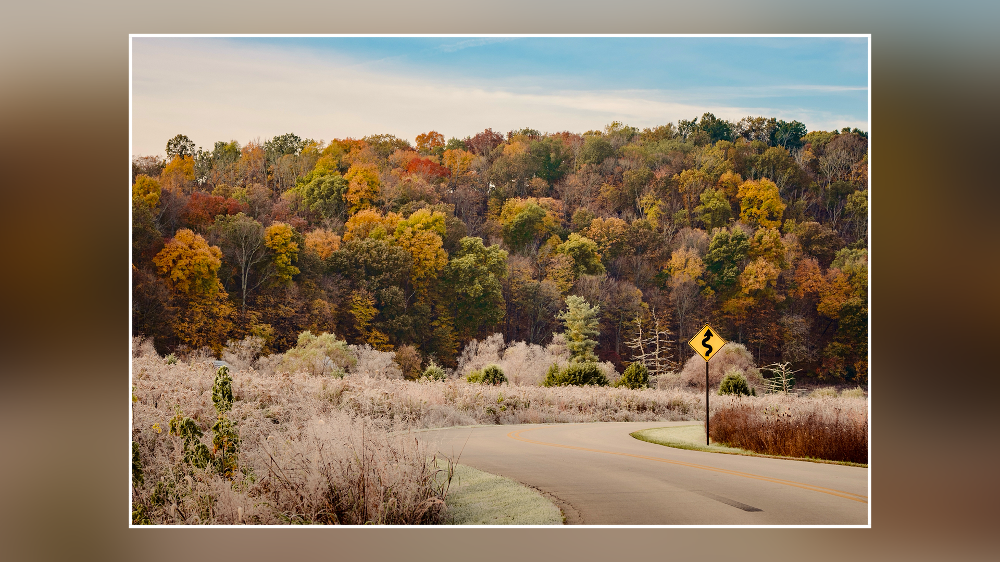
From Decks to your edit
Save a template for your photographs, then export finished files to use in your video project.
Decks prepares the files. You choose where to post, upload, or use them.
Smart layouts
Lay out a mixed batch by photo shape.
Choose Singles & Pairs, Singles & Threes, or Singles & Fours on Home and select your photos. On a vertical page, each vertical photo gets its own page and horizontal photos share pages, two, three, or four at a time. Turn on Only if taken within 10 minutes to group only photos taken close together.
To set your own rules, choose Build Your Own. Decide whether vertical, horizontal, and square photos get their own pages or share one, choose a background and border, and preview the result with your own photos before you save it.
Build your own smart layout →Choose a smart layout.
Pick a page shape on Home, then a smart layout. Choose the photos you want to use.
Review the pages.
Every page appears on one screen. Change how many photos share a page, split a page, or join it with the next one.
Create the project.
Open the pages in the editor to add text, camera details, or a date stamp, then export.

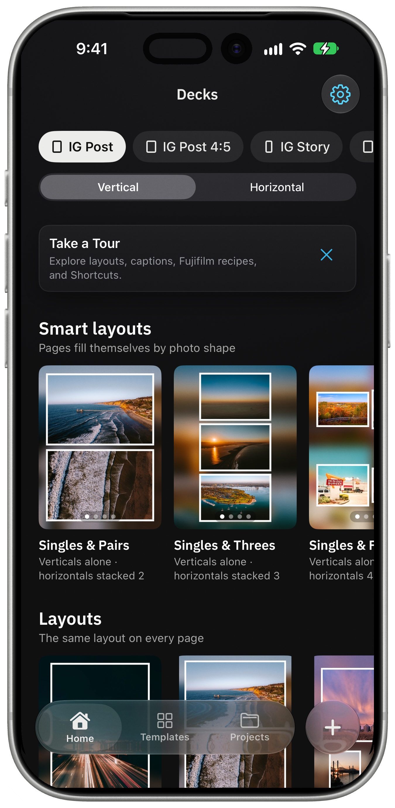

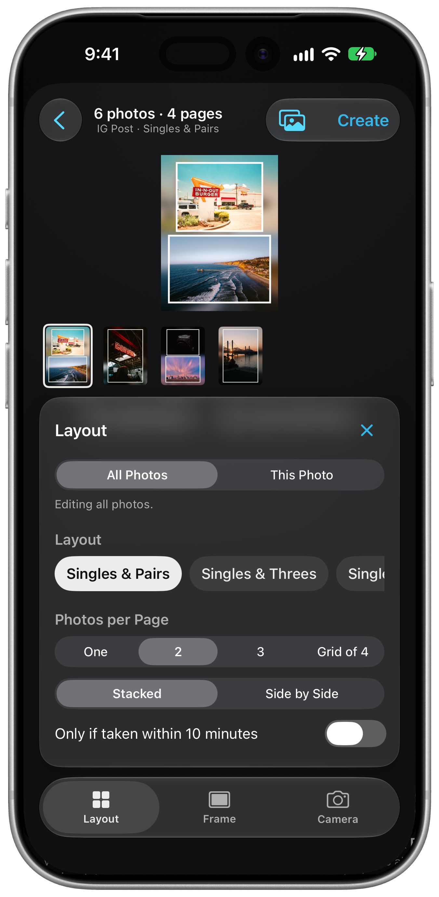

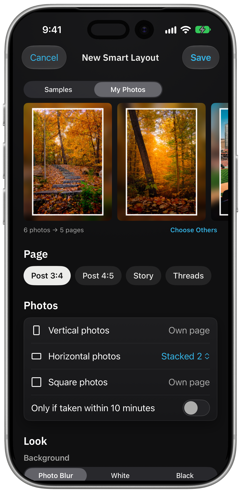
For an Aura frame, choose the frame on Home and start with Smart Layout under Frame layouts. On a sideways frame, vertical photos are paired and horizontal photos get their own pages; swap photos to choose the pairs. Decks creates files you upload through Aura; it doesn’t connect to your Aura account. Prepare photos for Aura →
Home and templates
Start from Home and save your own layouts.
Home shows smart layouts, layouts, and camera details designs sized for the page you choose: a post, a story, Threads, a video, or a digital frame. Pick one, choose your photos, and adjust every page with the same Layout, Frame, and Camera tools you use in the editor.

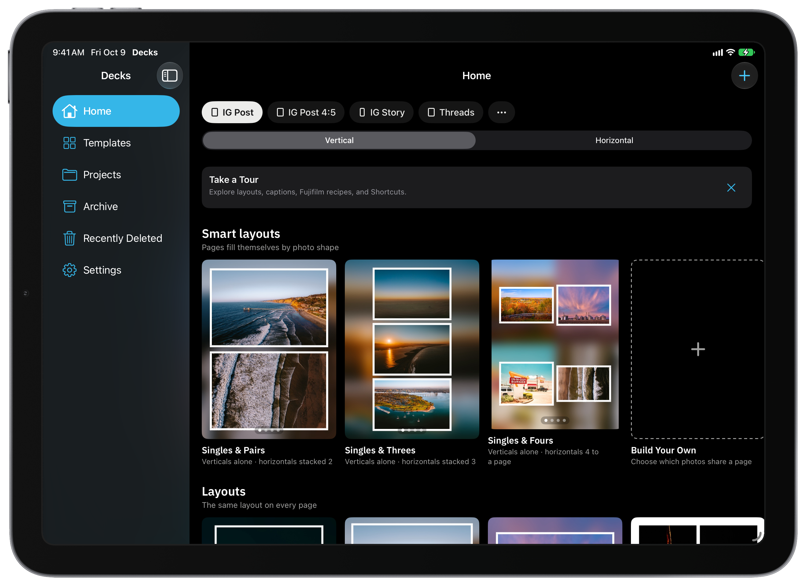
Save a design as a template.
Keep it simple with one photograph, place a few together, build a grid, or split a panorama into pages. Adjust spacing, crop, and individual margins in the editor.
Save your finished pages as a template. A template can also sort new photos by shape: one photo per page, or vertical and horizontal photos grouped onto shared pages, with the option to group only photos taken within 10 minutes of each other. The Templates tab keeps your favorites, smart layouts, and templates together.
Making and reusing templates → See Home on Mac ↗Text and camera details
Add text and camera details.
Add your own text, or let the photograph supply its camera make and model, lens, shutter speed, aperture, and ISO. Choose which details appear and place them under, above, beside, or on the photo, or drag them anywhere. Details sit in the page margin, and Decks widens the margin only as much as they need.


Start from a camera details design.
Seven designs build a page around the camera and exposure: Gear Band, Wall Label, Spec Sheet, Film Strip, Corner Mark, Spine, and Details List. Start one from Home, or apply it to a page you already have.


Choose fonts, including open-source families, light or dark ink, and a plate behind the details. On a story page, keep the details inside the Stories safe area. Save a style to use it again, and save caption presets for the wording you repeat.
See the camera details controls

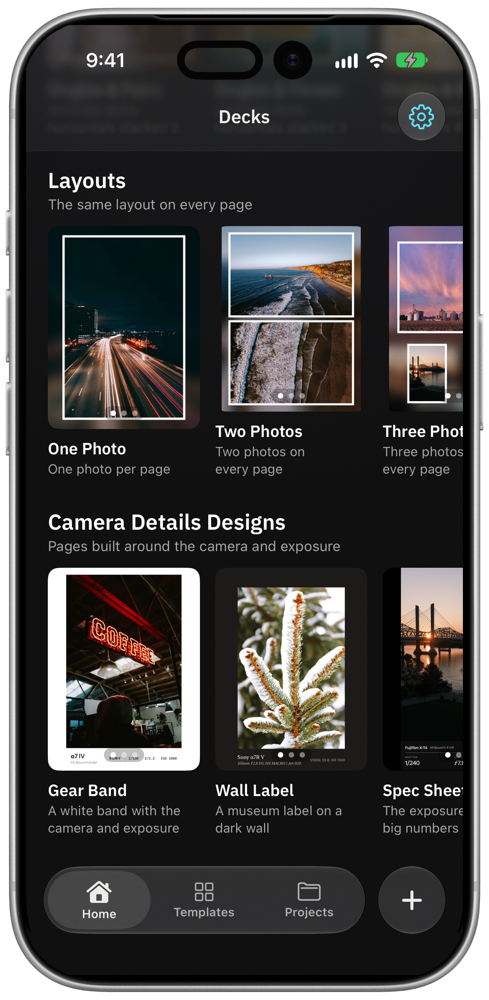
Date Stamp
Add a date stamp to your photos.
Print the date a photo was taken in its corner, the way a film camera does. Add the time, a place, or a short note as separate lines, and give each line its own style, color, and size.
Choose Digital, Clean, Typewriter, or Film lettering. A custom date changes only the stamp, never the photo or its saved date. Apply a stamp to one photo, the page, selected pages, or all photos. On a vertical photo, the date can run down the side.
Add a date stamp →
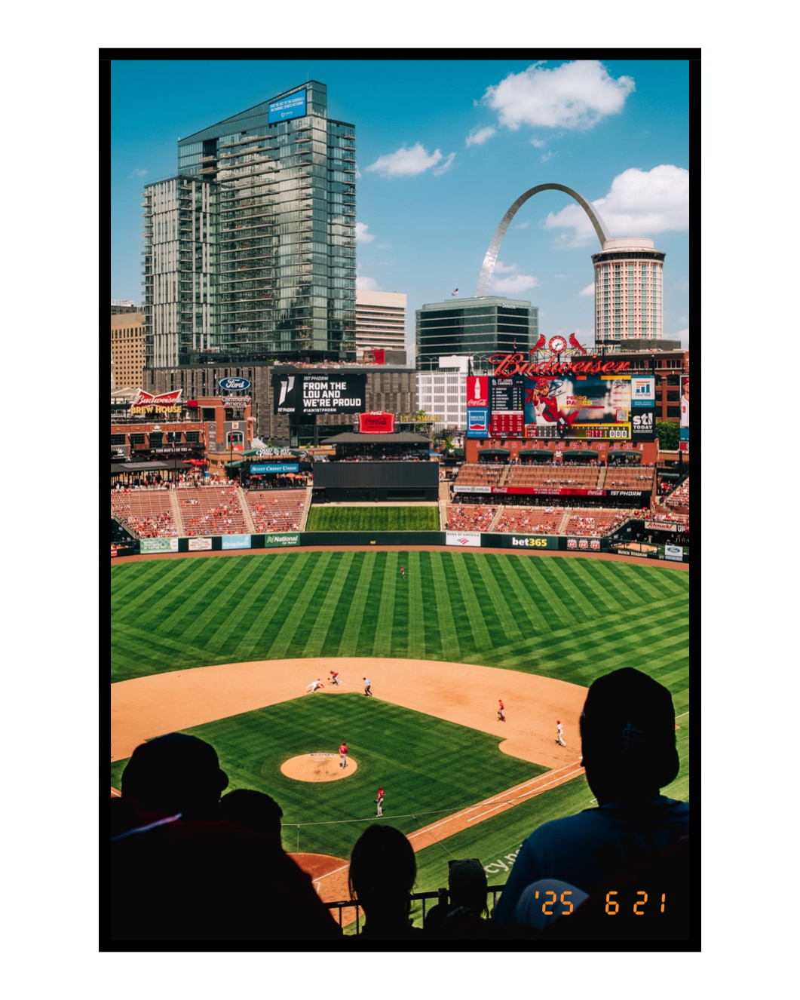

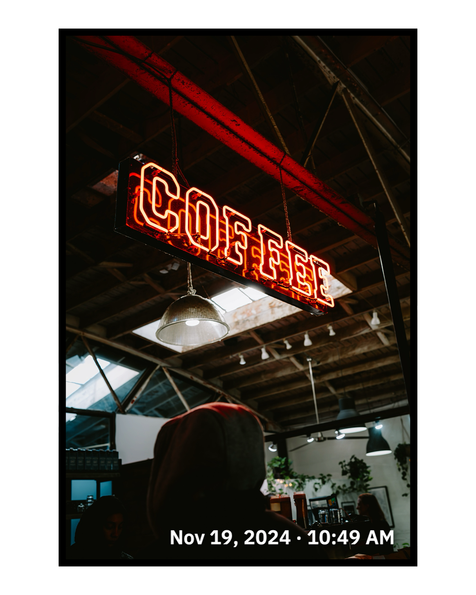

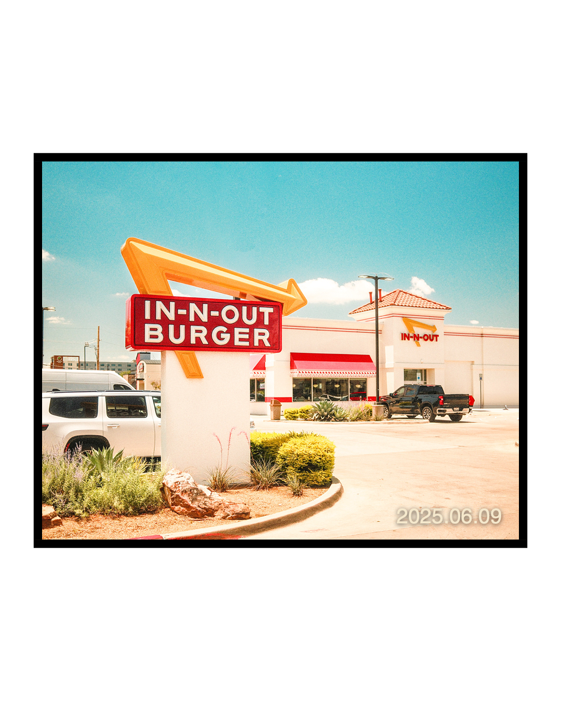

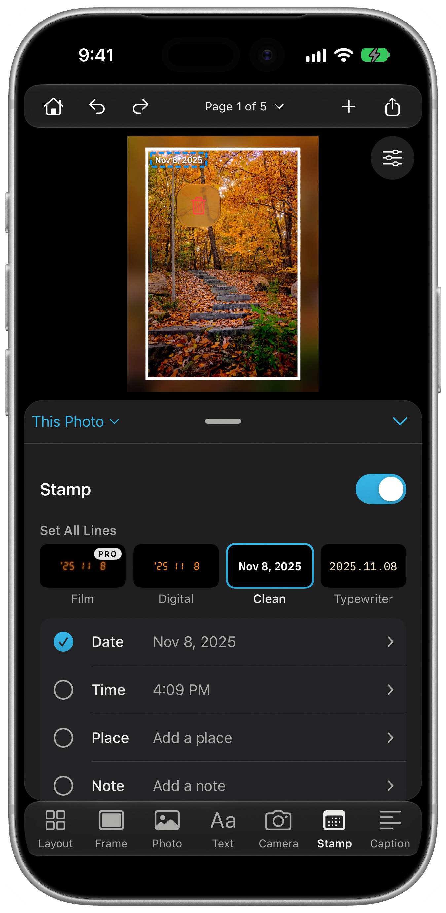

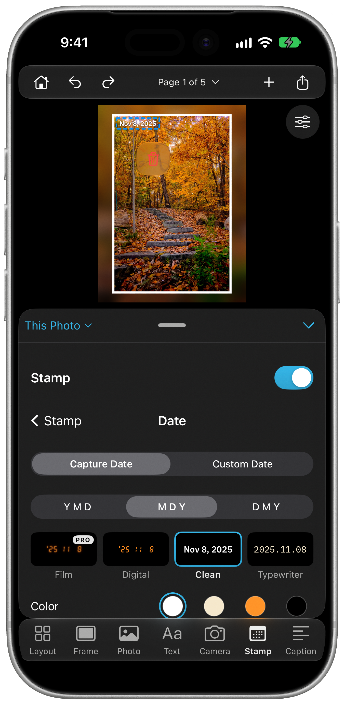
Place names come from the location saved in the photo, looked up with Apple Maps. Save favorite places to reuse them. Decks asks for your location only if you tap Current Location. How places are handled →
For your Fujifilm photographs
Display Fujifilm simulation settings.
Decks reads available film simulation and recipe settings from supported original Fujifilm JPEGs. Choose the details you want to show, customize them, and style them with your photograph.
Turn on Fujifilm Recipe in the camera details card to show the settings with your other details as a card, a line, dials, or a film box. Name and save your own recipes for reuse. Your recipe name comes from you; the recorded settings come from the file.

Fujifilm cards describe your settings; they do not apply a film simulation to the image. Available information depends on the original file. How Fujifilm details work →
Apple Shortcuts
Apply templates from Apple Photos.
Select one photo or a whole set in Apple Photos, run your saved template, and save finished copies without opening Decks.
- 01
Choose your photos.
Select one photograph or multiple photographs in Apple Photos.

An original photograph - 02
Run your template.
Use Decks Templates from the share sheet and choose a saved design.

One-time setup in Decks - 03
Keep the finished copies.
Your framed results save to Photos, ready to share. Your originals stay as they are.
The same photograph with its saved design
One-time setup: save a template, add the Decks Templates shortcut, and allow access to the photos you choose. Larger batches, video, or a permission request may bring Decks forward. Set up your Photos Shortcut →
iPhone · iPad · Mac
Use Decks on iPhone, iPad, and Mac.
A focused editor on iPhone. A spacious photo workspace on iPad. A native Mac app with Home, a sidebar for your projects and templates, and keyboard commands. iCloud sync keeps projects, templates, and reusable settings available across your devices; you can turn it off for local work.

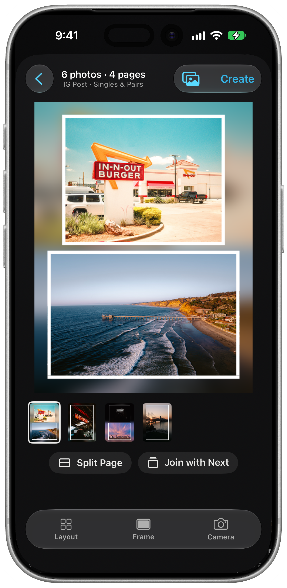

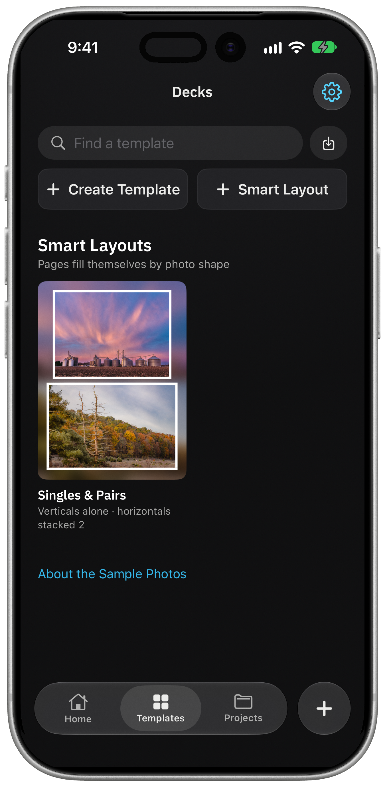
Build, browse, and refine on Mac.
Start on Home with your destination and your own photos. Keep Home, Projects, Templates, Photos, and Recent Activity in the sidebar, and press ⌘1 to return Home. In the editor, use the page strip and inspector to refine your composition, or press ⌘K to find a command.
Explore the Mac workspace →
See Home on Mac
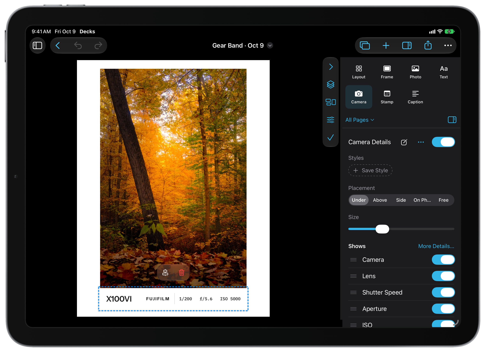
Beta requirements: iOS or iPadOS 18 or later; macOS 15 or later on Apple silicon. iCloud sync uses your private iCloud account and can be turned off in Settings.
Photos and videos
Frames and layouts for video, too.
Bring video clips into your layouts, add text and framing, trim a clip, and export an MP4. Use photographs and video pages in the same project.
See how to work with video →
Already use Ingest?
Send photos from Ingest to Decks.
Choose your photographs in Ingest and use Send to Decks. Continue with a new project or add them to an existing one, then apply your layout and share the finished work.
Incoming Photos keeps received batches ready when you want to work on them.
See the Ingest handoff →

Additional features
More tools for your photos.
Save a sequence of page designs
Select the pages you want and save them together as a template. A single-photo page followed by a pair can become a repeating design for your next set. Add Pages from Template adds new pages without replacing your existing work. Build a reusable sequence →
Mac commands and automation
Press ⌘K to find a command, customize keyboard shortcuts, and work with projects in separate windows. For repeat workflows, use Apple Shortcuts, AppleScript, or the decks command-line tool. Set up Mac automation →
Captions and reusable snippets
Write captions alongside your pages, insert camera details, and save wording as caption presets. Inserted details update for each photograph. The Caption Sheet keeps track of copied captions as you move between Decks and the app where you post.
Frames, backgrounds, and film borders
Choose white, black, ivory, a custom color, colors sampled from your photo, or a blurred background. Adjust borders, shadows, and individual margins, or use a film-style frame.


Panoramas and multi-photo layouts
Split one photograph into linked pages for a swipeable panorama. Arrange pairs, grids, and freeform compositions, or reorder pages to tell a longer story. Preview the sequence before exporting.
Logos, fonts, and film photographs
Add your own logo and hold it on a photo’s corner; the photo makes room so the whole logo stays on the page. Style text with fonts installed on your device. My Gear lets you supply camera and lens details for photographs that do not contain them, including film photographs.
Shot with Halide
Add a Shot with Halide credit to an eligible single-photo page when the original file’s software metadata identifies Halide. Find it in the Add menu or Camera controls. The option appears only for eligible photographs.
Contact sheets and exports
Export photographs as JPEG or PNG and video pages as MP4. Make a contact sheet to share several photographs together. Export controls let you review dimensions and quality before saving or sharing.
Editor controls and gestures
Keep your photo in view while you work. Adjust the controls and canvas, choose the current page or all pages where available, and use the page controls to move through your project. Text, logos, and camera details snap to guides on iPhone, iPad, and Mac. Read the editor guide.
Your library and iCloud
Sync projects, templates, destinations, Fujifilm recipes, My Gear, favorite places, and caption presets across your devices. Appearance stays separate on each device.
iCloud sync is on by default. Turn it off in Settings to keep future work local to that device. Read the privacy policy.
Built by a photographer
Try Decks with your photos.
I’m Brian, a photographer and developer. I built Decks to make the presentation part of sharing photographs easier to get right and easier to repeat.
Join the public beta through Apple’s TestFlight app. I’d love to hear how it works for your photography. How to install →